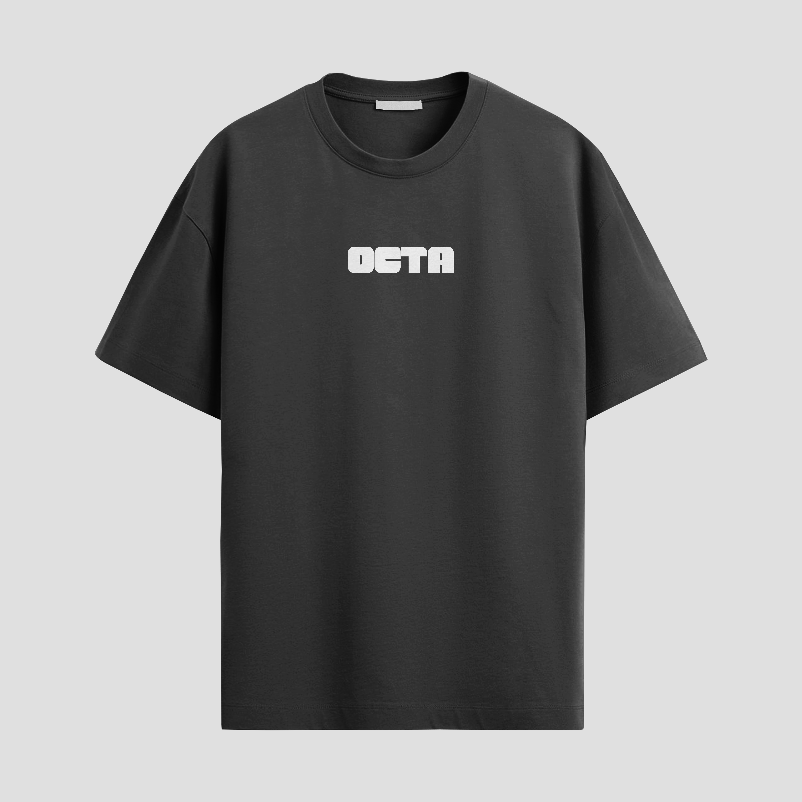

Logo principal
Version verticale
Charte graphique complète
OCTA
Charte graphique
Une identité visuelle minimaliste, contrastée et modulable, pensée pour une agence créative spécialisée en communication, photo, vidéo et graphisme.

01
Identité visuelle
02
Palette de couleurs
03
Typographies
04
Applications
Intention graphique
Une identité simple, directe et reconnaissable.
L’univers OCTA repose sur une direction visuelle sobre et affirmée : une typographie massive, une palette neutre, des contrastes forts et des formes arrondies qui permettent de créer une image moderne, professionnelle et facilement déclinable.
La charte a été pensée pour fonctionner aussi bien sur des supports digitaux que sur des objets physiques : cartes de visite, textile, signalétique, réseaux sociaux ou contenus de présentation.
Système visuel
Les éléments fondateurs de l’identité OCTA.
Logo secondaire
Version horizontale

Favicon
Icône web
Palette
Couleurs principales
#000000
#8A887E
#D1D0CB
#FFFFFF
Typographie
Principale
ArmWrestler
ABCDEFGHIJKLMNOPQRSTUVWXYZ
abcdefghijklmnopqrstuvwxyz
0123456789
Typographie
Secondaire
Klik-Light
ABCDEFGHIJKLMNOPQRSTUVWXYZ
abcdefghijklmnopqrstuvwxyz
0123456789
Applications
Une identité pensée pour exister partout.
L’univers OCTA se décline sur des supports concrets, du print aux objets de marque, en gardant une image sobre, moderne et immédiatement reconnaissable.

01 — Print
Carte de visite
Un support professionnel, minimaliste et cohérent avec l’identité visuelle de la marque.

02 — Textile
T-shirt
Une déclinaison simple et impactante pour créer une présence de marque visible.

03 — Ambiance
Photo de marque
Une atmosphère visuelle sobre, pensée pour accompagner l’univers global d’OCTA.

04 — Signalétique
Enseigne
Une application lisible et forte pour ancrer l’identité dans un espace physique.

05 — Objet
Gourde
Une déclinaison objet sobre, utile et cohérente avec l’univers de marque.
Conclusion
Une image de marque claire, moderne et facilement identifiable.
Cette charte graphique permet à OCTA de garder une cohérence forte sur tous ses supports : site web, réseaux sociaux, documents commerciaux, objets de marque et contenus visuels.
Retour aux projets